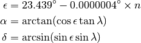
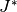

seasons – Equinoxes & Solstices¶
Analysis¶
The algebra for determining the equinox and solstics is unpleasantly complex it’s a 3-D spherical trigonomotry problem with a lot of pesky adjustments and estimations.
The solstice is when the sun reaches the north (or south) limit. At some location, of course, this happens at local apparent noon. At the observer’s location, however, it can be any time of the day or night.
The equinox is when the sun crosses the equator. Again, the observer may be on the other side of the planet when this happens.
Algebra¶
Predicting the equinox or solstice means we’re looking for specific declination values: the upper limit, the lower limit and the two equatorial crossings.

Where  is the sun’s ecliptic longitude. The
value is the earth’s ecliptic, about 23.44°. We’re looking
at four values:
latitude values: and both zero values.
This means that .
is the sun’s ecliptic longitude. The
value is the earth’s ecliptic, about 23.44°. We’re looking
at four values:
latitude values: and both zero values.
This means that .
We’re solving this
for four distinct values.
That means we’re really working four solutions to this:
Inserting the definition of C and M, this becomes,
![\lambda &= ( M + 102.9372 + 1.9148 \sin M + 0.0200 \sin 2M + 0.0003 \sin 3M + 180 ) \mod 360 = \lbrace 0, 90, 180, 270 \rbrace \\
M &= \left[ 357.5291 + 0.98560028 \times ( J^{*} - 2451545) \right] \mod 360](../../_images/math/986b1ba6007c6f9710fae5a2d91a94b15e1bd100.png)
Therefore, we’re solving for  values: the dates on which .
The complexity of this equation seems to indicate that an approximation is more appropriate.
Approximation¶
We can, on the other hand, follow the HamCalc example and do a search around the the four times of year to get a good approximation.
Solstices are near June 21 and December 21. We can search for maxima or minima of solar declination. Maxima (and minima) require some care; the search is really for the zero crossing of the first derivative.
Equinoxes are near March 15 and September 15. Here, we’re searching for the zero crossing of declination.
We can use simple bisection to find times with the appropriate properties.
Implementation¶
This leverages hamcalc.navigation.solar. See sunup – Sunrise, Sunset, Transit.
It becomes a cute little module in hamcalc.stdio that solves for “Sun’s Apparent Longitude” (P) of 0, 90, 180 and 270 in a given year.
Legacy Output¶
Input values include:
Name of your location.......? ? Annapolis
ENTER: Your latitude (XX.X degrees, minus if SOUTH).....? 38.9
ENTER: Your longitude (XX.X degrees, minus if EAST)......? 76.3
Press number in ( ) to indicate your Time Zone:
(1) Atlantic
(2) Eastern
(3) Central
(4) Mountain
(5) Pacific
(6) Other
ENTER: Year to be used in calculations (yyyy)............? 2013
Output Format:
Date Daylight Sunrise (EST) Sunset (EST) ┌───── Noon ────┐
hours and Azimuth and Azimuth Sun Earth Axis
Quirks¶
It appears that this program includes a great deal of copy-and-paste duplication of sunup.
More importantly, it finds the equinoxes and solstices by a simple linear search in 0.05 day (1.2 hr) increments. That’s 7300 individual calculations to find four specific dates and times.
Here’s the logic.
X1 = 0.05; BB is the PI/2-Latitude of observer; DECL is the sun’s declination; P is the 23.4426, the equatorial obliquity.
1160 J=DECL-BB/2/PI
1170 IF J>X1 THEN 1190
1180 IF J<X1 AND DECL>0 THEN H=J:GOTO 1220
1190 IF (P-DECL)<X1 THEN H=J:GOTO 1220
1200 IF (DECL+P)<=X1 THEN H=J:GOTO 1220
Line 1220 will print the astrononical details for this date and time.